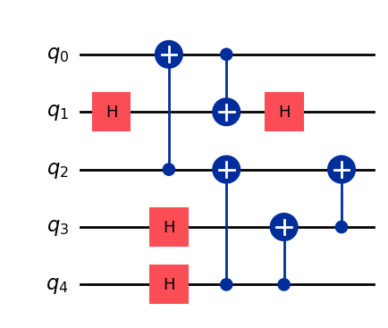

Code repository for generating quantum circuits with diffusion models. [Arxiv][Demo]
The codebase
The code contained within this repo allows the sampling of pre-trained diffusion models and includes our pipeline to fine-tune and train models from scratch. Pre-trained weights can be found on Hugging Face and can be downloaded automatically via our code (see minimal example). For the CLIP model weights we use the OpenCLIP library, which will download (and cache) the CLIP model on first usage of our pipeline. In case you prefer reading a documentation rather than notebooks or code see [Documentation].
The repo inlcudes:
genQC/ a full release of our used diffusion pipeline.
src/examples examples how to reproduce some figures of the Paper.
A minimal example to generate a 5 qubit circuit conditioned on a SRV of \([1,1,1,2,2]\). You can try it out on your own with our [Demo], no coding required.
[INFO]: `genQC.models.unet_qc.QC_Cond_UNet` instantiated from given config on cpu.
[INFO]: `genQC.models.frozen_open_clip.CachedFrozenOpenCLIPEmbedder` instantiated from given config on cpu.
[INFO]: `genQC.models.frozen_open_clip.CachedFrozenOpenCLIPEmbedder`. No save_path` provided. No state dict loaded.
print(f"Circuit is SRV {srv_list[0]}")qc_list[0].draw("mpl")
Circuit is SRV [1, 1, 2, 2, 2]

Included examples
Example notebooks are provided in the directory src/examples/.
0_hello_circuit[doc][notebook]: How to sample a circuit (conditioned on a SRV)
1_editing_and_masking[doc][notebook]: Presents editing and masking of circuits
2_unitary_compilation[doc][notebook]: Compile unitaries and transpile circuits
3_dataset_and_fineTune[doc][notebook]: How to create a dataset and fine-tune a pre-trained model
Installation
The installation of genQC is done via pip within a few minutes, depending on your downloading speed.
Method 1: pip install
To install genQC just run:
pip install genQC
Note, this will install missing requirements automatically. You may want to install some of them manually beforehand, e.g. torch for specific cuda support, see pytorch.org/get-started/locally.
Requirements:genQC depends on python (min. version 3.10) and the libraries: torch, numpy, matplotlib, scipy, pandas, omegaconf, qiskit, tqdm, joblib, open_clip_torch, ipywidgets, pylatexenc and huggingface_hub. All can be installed with pip. In src/RELEASES.md[doc] and the release descriptions specific tested-on versions are listed.
Method 2: clone the repository
To use the latest GitHub code you can clone the repository by running:
The library genQC is built using jupyter notebooks and nbdev. To install the library use in the clone directory:
pip install -e .
Test installation
You can run the provided 0_hello_circuit[doc][notebook] example to test your installation. On a computer with a moderate GPU this inference example notebook should run under half a minute.
License
The code and weights in this repository are licensed under the Apache License 2.0.
BibTeX
We kindly ask you to cite our paper if any of the previous material was useful for your work.
@article{furrutter2024quantum, title={Quantum circuit synthesis with diffusion models}, author={F{\"u}rrutter, Florian and Mu{\~n}oz-Gil, Gorka and Briegel, Hans J}, journal={Nature Machine Intelligence}, doi = {https://doi.org/10.1038/s42256-024-00831-9}, vol = {6}, pages = {515-–524}, pages={1--10}, year={2024}, publisher={Nature Publishing Group UK London}}